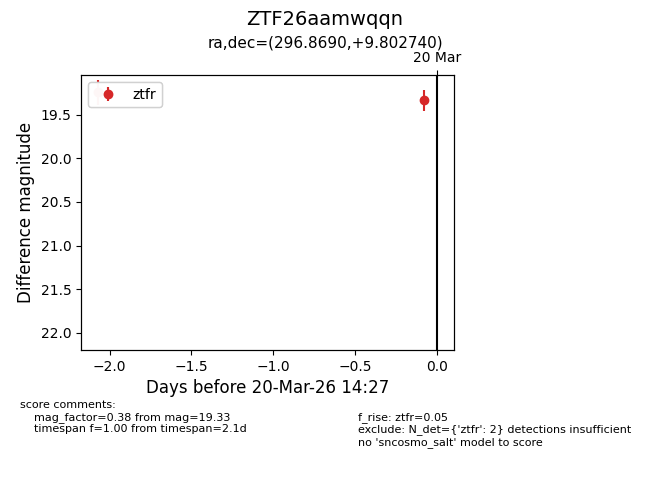
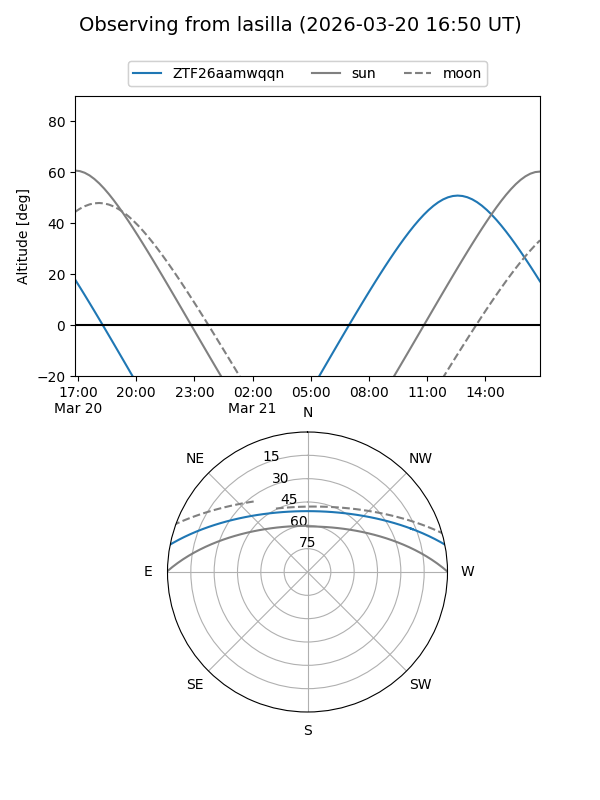
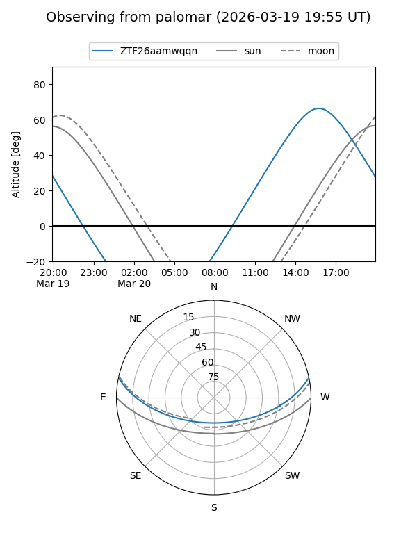
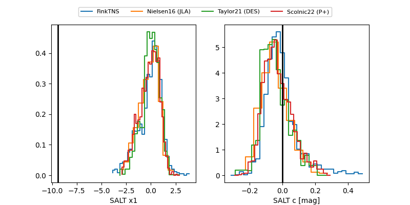

ZTF26aamwqqn
Target ZTF26aamwqqn at 2026-03-20 14:29
Aliases and brokers:
FINK: link
Lasair: link
ALeRCE: link
alt names
ZTF26aamwqqn (ztf,fink_ztf)
Coordinates:
equatorial (ra, dec) = 296.8690,+9.80274
equatorial (HMS+DMS) = 19:47:28.55,+09:48:09.86
galactic (l, b) = (48.1619,-7.73958)
Flags:
Photometry:
last ztfr=19.33
2 ztfr detections
Lightcurve

Visibility


Additional plots
